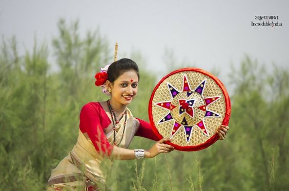

Bihu

Bihu is a set of three important Assamese festivals in the Indian state of Assam[4] – 'Rongali' or 'Bohag Bihu' observed in April, 'Kongali' or 'Kati Bihu' observed in October, and 'Bhogali' or 'Magh Bihu' observed in January.[5] The Rongali Bihu is the most important of the three, celebrating spring festival. The Bhogali Bihu or the Magh Bihu is a harvest festival, with community feasts. The Kongali Bihu or the Kati Bihu is the sombre, thrifty one reflecting a season of short supplies and is an animistic festiva
In local folklore, it is said that Bordoisila (Bardai Sikhla in Bodo) (meaning north-westerly winds in Assamese) was the daughter of God Earth who married to a bridegroom of some distant land. Bordoisila visits her mother’s home once in year during spring time which indicates the beginning of Bihu and leaves after a few days which indicates the end of Bihu. Assam experience strong gale (wind) at that period which marks the beginning of Bihu and another strong gale after her departure which is devastating. The word Bordoisila is derived from the Bodo word Bordaisikhla which means "girl of storm" (Sikhla meaning girl and Bardai meaning storm). There is even a dance with the same name performed among Boro people during Baisagu which points to the origin of Bihu in the Bodo-Kachari groups
The first reference of Bihu can be found in the copperplate inscription of the Chutia king Lakshminarayan. The inscription was found in Ghilamara region of Lakhimpur district in the year 1935 and it was issued in the year 1401 A.D. It states that the king Lakshminarayan has donated land grants to Brahmins on the auspicious occasion of Bihu. It reads,